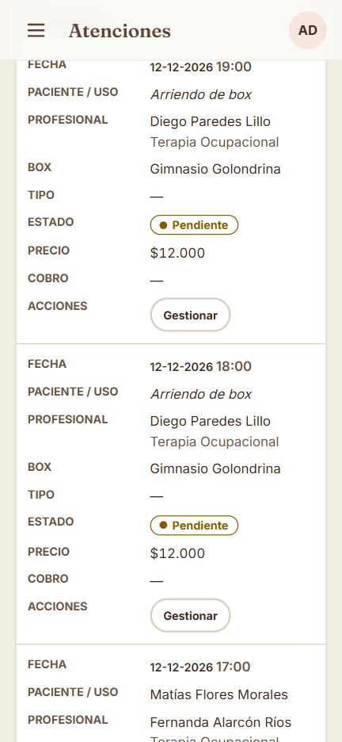
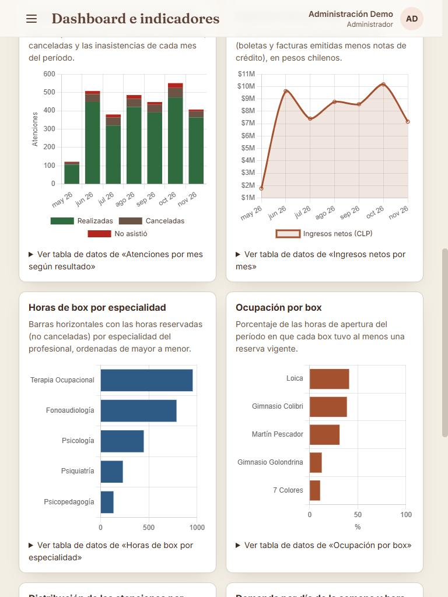

Lenguaje de Programación Web II · Evaluación 3
Proyecto integrador: sistema web de gestión de un centro terapéutico, análisis de datos y plan de despliegue
Integrante: Rocío Riquelme Torres
Completar: otros integrantes del equipo (si corresponde), sección, docente y fecha de entrega.
Sistema en línea: https://trivoxa.cl/espacioluzdemo · API: /api/v1 · Swagger: /api/docs
Datos 100 % sintéticos. Las boletas y facturas son de demostración: nunca se envían al SII.
Contexto. Espacio Luz es un centro terapéutico de Los Ángeles (Región del Biobío) que atiende a niños, adolescentes y adultos con profesionales socias de terapia ocupacional y fonoaudiología, y que además arrienda por hora sus cinco boxes (salas y gimnasios sensoriales) a profesionales externos de psicología, psiquiatría y psicopedagogía, a quienes factura mensualmente.
Problema. La operación diaria —agenda de boxes, fichas clínicas, cobros a pacientes y facturación a clientes— necesitaba reglas consistentes (cupos, horarios, estados), trazabilidad de los cambios y, sobre todo, información para decidir: qué tan ocupados están los boxes, cuántos pacientes asisten, cuánto se factura y cuánto falta cobrar.
Objetivo. Construir un sistema completo sobre el sistema real del centro, agregando una API REST segura, validación en tres niveles, auditoría, un dashboard de indicadores, reportes exportables, un resumen con IA, contenerización, CI/CD y un plan de despliegue.
Alcance. Espacio Luz Demo es una copia del sistema en producción con datos sintéticos (12 meses, 5.520 atenciones, 520 pacientes) y documentos tributarios de demostración. Incluye sitio público, agenda en línea, panel administrativo, fichas clínicas, cobros, análisis y API. Queda fuera la emisión tributaria real, los pagos en línea y el envío real de correos.
Completar: roles de cada integrante (p. ej. backend/API, base de datos, front end y accesibilidad, BI y reportes, DevOps) y aporte individual verificable en el historial de commits.
| Hito | Semana | Entregado |
|---|---|---|
| 1 · Propuesta y diseño | 11 | Dominio, requerimientos e historias (01), arquitectura (03), modelo ER (02), contrato OpenAPI, maquetas (docs/maquetas), repositorio. |
| 2 · Datos y backend | 12 | 6 migraciones Phinx, datos sintéticos, API /api/v1 con JWT y 4 roles, validación, pruebas de integración. |
| 3 · Front end, contenedores e IA | 13 | Módulos Atenciones, Dashboard, Reportes y Auditoría conectados a la API; Dockerfile, compose y pipeline; endpoint de IA. |
| 4 · Análisis, reportes y despliegue | 14 | Indicadores, dashboard, 3 reportes con exportación e impresión, plan de despliegue, auditoría de accesibilidad. |
Herramientas: PHP 8.3, MariaDB 11.8, Composer, Phinx, PHPUnit 11, dompdf/TCPDF, Chart.js 4, Docker y Compose, GitHub Actions,
axe-core, Mermaid, Git (repositorio en el servidor con despliegue por git push), Claude Code como asistente (declarado en el README).
Organización del repositorio: src/ API en capas · lib/ pages/ partials/ sistema clásico · dte/ motor tributario (modo demo) ·
database/ migraciones, seeds y SQL · tests/ · docker/, Dockerfile, compose.yaml, .github/ · docs/ documentación y evidencias · tools/ utilidades CLI.
Contrato OpenAPI 3.1 (docs/openapi.yaml, servido en /api/v1/openapi.yaml y navegable en /api/docs):
29 operaciones sobre los recursos sistema, auth, catálogos, atenciones (con /estado, reprogramación y /boleta), pacientes, documentos y pagos,
dashboard, reportes y exportación, IA y auditoría; esquemas de datos, códigos de estado, modelo de errores y esquema de seguridad Bearer JWT.
| Aspecto | Implementación |
|---|---|
| Rutas, verbos y códigos | GET (listar/ver), POST (crear → 201 + Location), PUT (reemplazo de paciente), PATCH (estado, reprogramar); 401, 403, 404, 405 con Allow, 409 reglas de negocio, 422 validación, 429 límite, 502/503/504 servicios externos. |
| Errores centralizados | Kernel::handle captura todo: {"error":{code, message, details[], request_id}}; los 500 no exponen trazas y quedan en storage/logs/api.log con su request_id. |
| Validación (2.º nivel) | Validator declara tipos y reglas y junta todos los errores de una vez; los servicios validan reglas de negocio (calendario, cupo, transiciones, consentimiento, apoderado, saldo). El 3.er nivel son 34 CHECK, FK, UNIQUE y disparadores. |
| Serialización | JSON UTF-8; listas con data + meta (página, total, páginas); campos sensibles nunca serializados (hash de contraseña) y minimización por rol. |
| Seguridad | JWT HS256 propio (rechaza alg distinto, exp/nbf/iss, revalida el usuario), 4 roles por ruta, OWASP API1/2/3/4/5/8/9/10 mitigados (detalle en §4), auditoría por disparadores y limitación de tasa (login 5/min, API 120/min, IA 10/min). |
| Pruebas | PHPUnit: 58 pruebas, 444 verificaciones, todas en verde (18 unitarias + 40 de integración que recorren la API completa contra MariaDB en transacciones revertidas). Reporte: docs/evidencias/pruebas/. |


| Aspecto | Implementación |
|---|---|
| Servicio | Groq (API compatible con OpenAI), modelo GPT-OSS 120B, respuesta en formato JSON. Proveedor intercambiable por la interfaz IaClient. |
| Endpoint | POST /api/v1/ia/resumen (Administración y Gerencia) con desde, hasta (≤ 1 año), enfoque (general, ocupación, cobranza) y especialidad opcional. Devuelve resumen, hallazgos, recomendaciones, modelo, latencia y los indicadores usados. Se usa desde el dashboard. |
| Valor para el dominio | Convierte los 10 indicadores y su comparación con el período anterior en un resumen ejecutivo para la reunión de gestión del centro. |
| Privacidad | Solo se envían indicadores agregados: nunca nombres, RUT, correos ni datos clínicos (Ley 19.628 y 20.584). Una prueba verifica que lo enviado no contiene correos ni nombres de pacientes. |
| Clave | Variable de entorno GROQ_API_KEY (fuera del repositorio; vacía en CI). Sin clave el endpoint responde 503 IA_NO_CONFIGURADA y el resto del sistema sigue operando. |
| Tiempo máximo y errores | AI_TIMEOUT (20 s) y 5 s de conexión. Timeout → 504 IA_TIEMPO_AGOTADO; error del proveedor o respuesta inválida → 502 IA_ERROR; límite del proveedor → 503 IA_SATURADA con Retry-After; límite propio 10/min → 429. Todo en el formato estándar y registrado en ia_consultas. |
| Entrada y salida validadas | Entrada con Validator; salida del modelo validada contra un esquema y recortada (OWASP API10). Pruebas con el servicio simulado (FakeIaClient) para éxito, timeout, error, saturación y respuesta inválida. |
Configurar GROQ_API_KEY en el .env del servidor para la demostración en vivo.
| Pieza | Resumen |
|---|---|
| Dockerfile | Multi-etapa con bases Alpine de versión fija (php:8.3.14-fpm-alpine3.20, composer:2.8.4, nginx:1.27.3-alpine): dependencias, base PHP con extensiones, etapa de pruebas unitarias (si fallan, no hay imagen), imagen final app sin herramientas de desarrollo y con usuario www-data, e imagen web (nginx). Health checks en ambas. |
| compose.yaml | 5 servicios: web (único puerto publicado, 8080), app, db (MariaDB 11.8 en red interna), migrate (migraciones + datos sintéticos, termina) y backup (diario, 14 días). Redes frontend / backend interna / egress (solo app, para la IA); volúmenes db-data, storage, imagenes y backups; variables desde .env (se entrega .env.example). Arranca con docker compose up. |
| Pipeline CI/CD | GitHub Actions: pruebas (PHPUnit contra MariaDB + reversión de migraciones) → contenedores (build, compose up, prueba de humo HTTP con login por rol, PDF y bloqueo de archivos internos, respaldo y restauración en menos de 15 min, rollback) → publicación en GHCR solo en main y solo si todo pasó; secretos generados y enmascarados. |
Completar con el aporte individual y los commits de cada integrante.